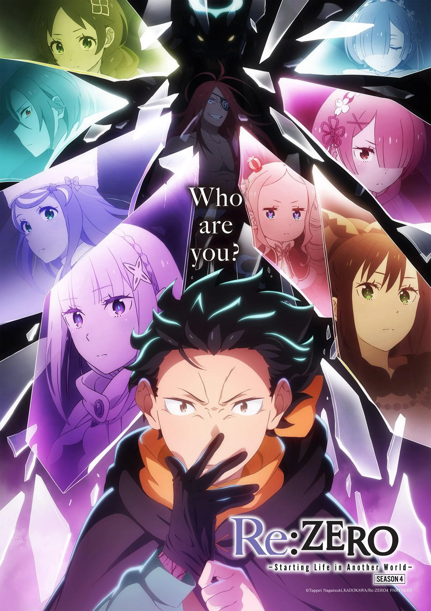
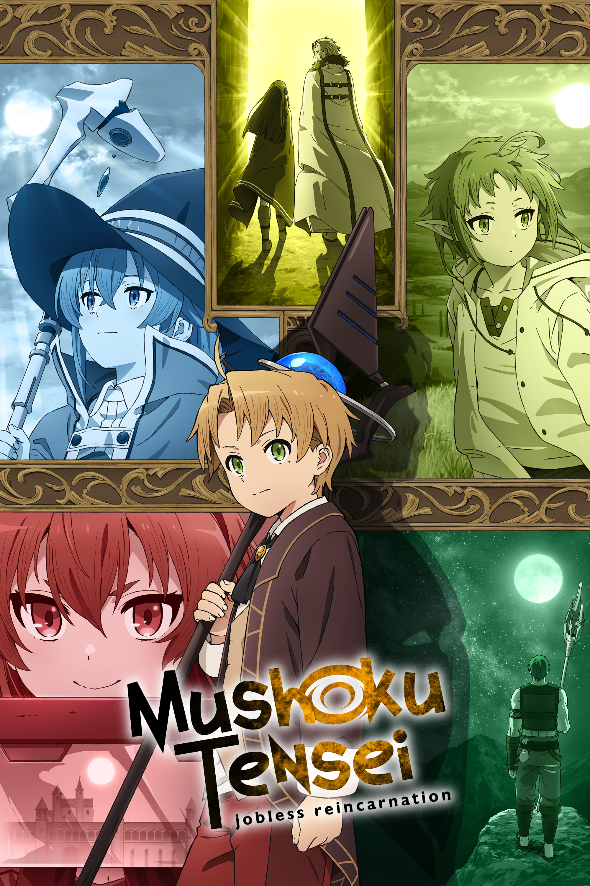
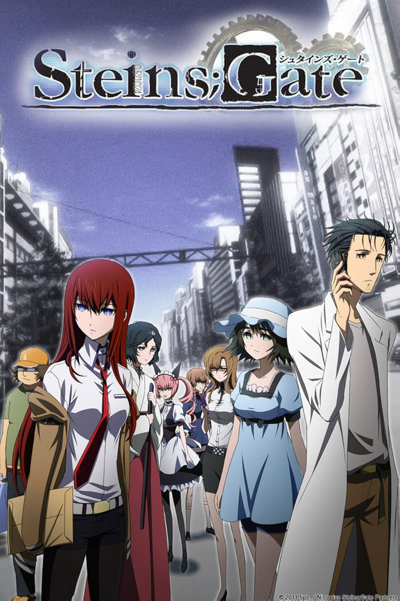
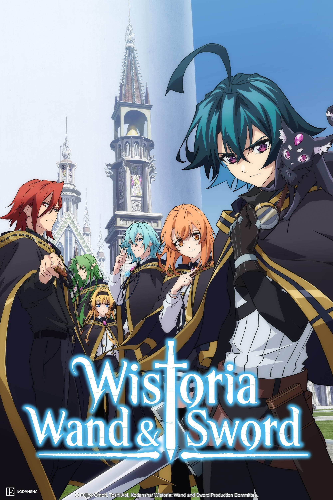
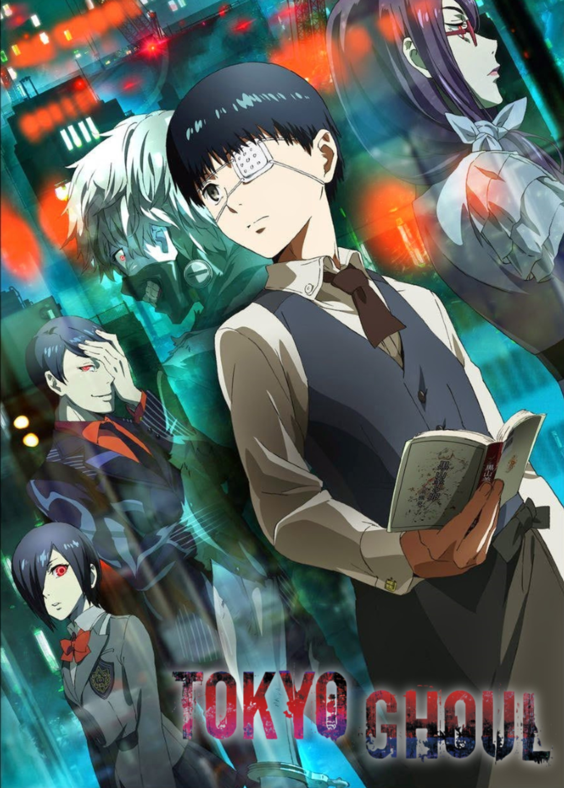
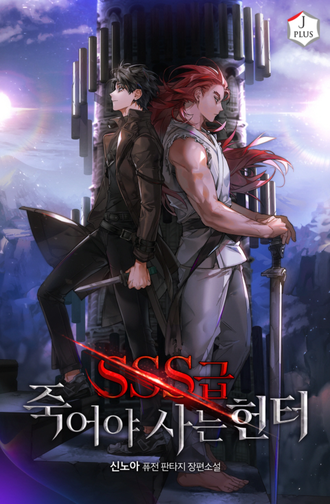
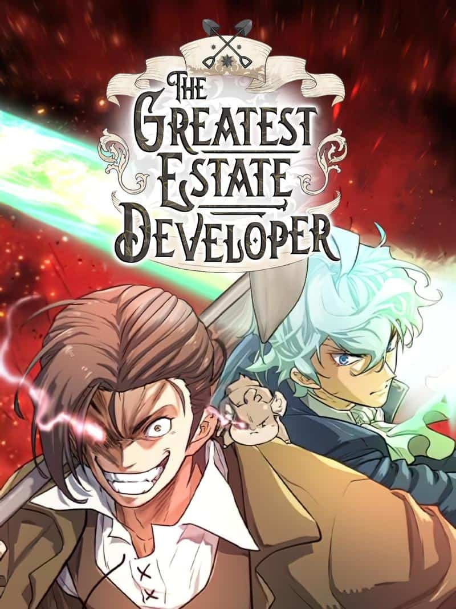
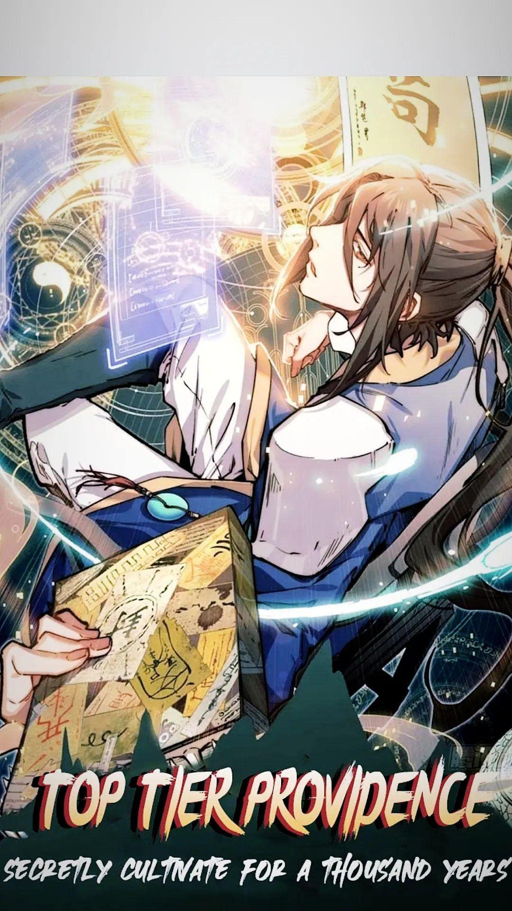
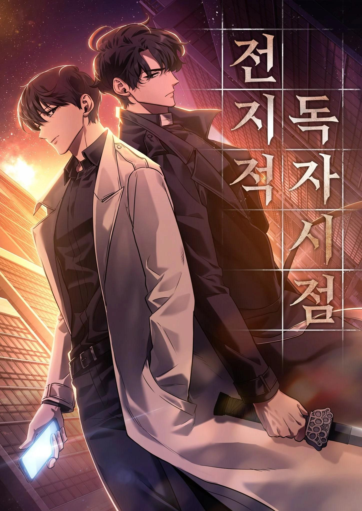
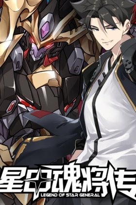

A simple page showing a couple of my favourite series
Hi, I'm Jeremy. I enjoy reading manhwa, watching anime,
gaming, and learning new skills.
This page showcases some of my favourite anime and manhwa
series that I would recommend to others.

Re Zero was one of the first series that completely changed how I viewed isekai anime. What
stood out the most was Subaru's ability, Return by Death, which allows him to rewind time
whenever he dies. Instead of being an overpowered ability, it becomes a source of suffering,
forcing him to relive painful experiences while carrying the memories alone.
The series combines psychological drama, mystery, action, and character growth in a way that
keeps every arc engaging. Watching Subaru struggle, fail, and slowly grow as a person made
his victories feel meaningful. The world-building, emotional moments, and memorable cast
make Re one of the most unique and impactful anime I have watched.

Mushoku Tensei is one of my favorite isekai series because of how immersive its world feels.
While it has exciting action and magic, what I enjoyed most was the journey itself. The
story takes its time developing the world, cultures, characters, and relationships, making
everything feel alive.
Rudeus starts with many flaws, but watching him mature and build a new life is what makes
the series interesting. The combination of adventure, world-building, and character growth
creates a story that remains engaging from beginning to end. Every new location feels
unique, and the attention to detail makes the world feel believable and lived in.

Steins;Gate is simply a masterpiece. What starts as a seemingly lighthearted story about a
group of friends conducting strange experiments gradually evolves into one of the best
time-travel stories ever created.
The series excels at building suspense, emotional tension, and mystery. Every event feels
carefully planned, and the payoff for the story's setup is incredible. Okabe's journey is
unforgettable, and the way the series handles time travel remains one of the smartest and
most satisfying examples in anime. Steins;Gate is a series that becomes even better after
reflecting on the entire story.

Wistoria impressed me with both its action and character development. The story follows Will
Serfort, a boy who lacks magical talent in a world where magic determines status and
success. Despite this disadvantage, he continues pushing forward through determination and
hard work.
One of the strongest aspects of the series is watching the story gradually unfold while
revealing more about the world and its characters. The action scenes are exciting, the
animation is impressive, and Will's growth throughout the story makes him easy to root for.
It is an enjoyable fantasy series that balances action with meaningful character
progression.

Tokyo Ghoul holds a special place for me because it was one of the first anime I watched. The
story follows Ken Kaneki as he is forced into a world where humans and ghouls exist in
constant conflict.
What makes Tokyo Ghoul memorable is its exploration of identity, morality, and belonging.
Kaneki's transformation from an ordinary student into someone caught between two worlds
creates a compelling story filled with emotional and psychological struggles. The dark
atmosphere, memorable characters, and iconic moments helped make it one of the most popular
anime of its generation.

SSS-Class Suicide Hunter is one of the few series that impressed me enough to make me read
the light novel after finishing the manhwa. The story follows Kim Gong-Ja, a hunter who
gains the unique ability to return to the past whenever he dies, creating countless
opportunities for growth and development.
What makes this series stand out is how well it handles its characters, world-building, and
emotional storytelling. While it is primarily an action-fantasy series, it also contains one
of the best romance arcs I have read in a manhwa. The romance feels meaningful and
well-developed rather than being included as an afterthought. Combined with excellent
character writing and memorable story arcs, this makes SSS-Class Suicide Hunter one of my
favorite manhwa.

The Greatest Estate Developer is one of the funniest manhwa I have read while still
delivering a surprisingly good story. The series follows Lloyd Frontera, an engineering
student who reincarnates into a fantasy world and uses modern engineering knowledge to solve
problems.
The comedy is easily one of the series' strongest points, with Lloyd's expressions and
interactions creating countless hilarious moments. However, beneath the comedy lies a
genuinely engaging story filled with action, political conflicts, and large-scale projects.
The balance between humor and serious storytelling makes it consistently entertaining and
easy to recommend.

Top Tier Providence offers a refreshing twist on the cultivation genre. In many cultivation
stories, the protagonist constantly seeks danger, opportunities, and battles to become
stronger. Han Jue takes the complete opposite approach.
Instead of chasing every conflict, he focuses on cultivating in safety and avoiding
unnecessary risks. This unique approach creates a lot of comedy while also making his growth
feel satisfying. Watching him become increasingly powerful while staying cautious and
calculating is both entertaining and refreshing. The combination of humor, progression, and
cultivation elements makes it one of the most enjoyable series in its genre.

Omniscient Reader's Viewpoint is one of my top manhwa and a series I enjoyed enough to
also start reading the light novel. The story follows Kim Dokja, the only reader who finished a
web novel called Three Ways to Survive in a Ruined World. One day, the events of the novel
suddenly become reality, leaving Dokja as the only person who knows how the story is supposed to
unfold.
What I enjoyed most about ORV is how the story constantly builds on what you think you already
know. Dokja's knowledge gives him an advantage, but he still has to plan, take risks, and work
with the other characters to survive. The world-building, mysteries, character relationships,
and huge scale of the story kept me interested throughout the manhwa. I also really like how
important the relationship between Kim Dokja and Yoo Joonghyuk becomes as the story develops,
making ORV one of the most memorable series I have read.

Legend of the Star General is one of my favorite manhua because of its unique blend of
science fiction, mecha combat, and cultivation elements. The story follows a protagonist who
regresses into the past and uses his knowledge of future events to change history and
protect humanity.
What I enjoyed most about Legend of Star General is watching the protagonist steadily work
toward changing the future. Instead of becoming powerful overnight, he gradually builds his
strength, develops stronger mechs, forms alliances, and prepares for the challenges ahead.
The mix of action, progression, science fiction, and cultivation makes it a memorable series
and one of my favorite manhua.